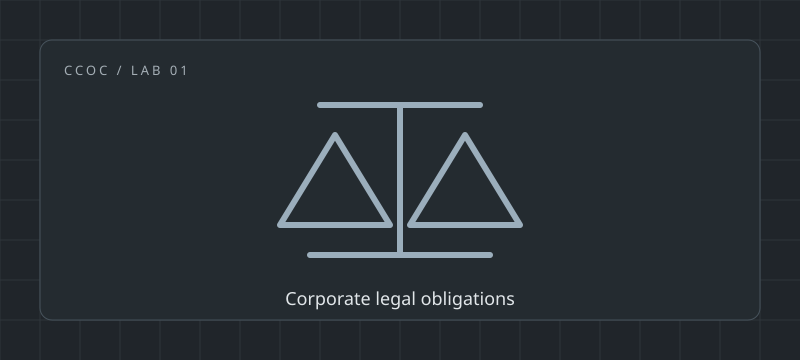

CCOC Simulation Studio
Made by Prof. Nicholas Dragassakis
Loading simulation modules. If this message remains, the application script did not initialize.
Reload studio
Made by Prof. Nicholas Dragassakis
Loading simulation modules. If this message remains, the application script did not initialize.
Reload studio